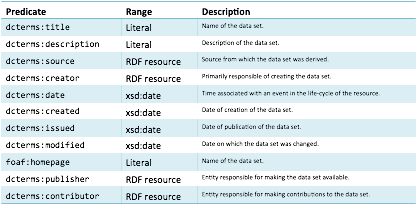
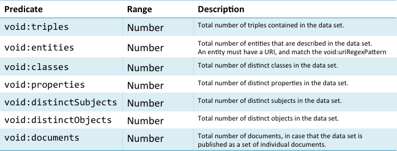
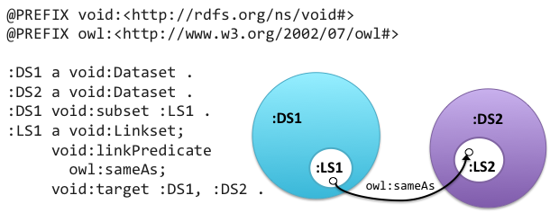
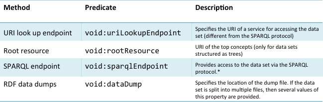

A published RDF dataset should have metadata about itself that can be processed by search engines. This metadata allows for:
The frequently used vocabulary for describing RDF datasets is VoID (Vocabulary of Interlinked Datasets) [13]. An RDF dataset is expressed as being of the type void:Dataset.
The VoID schema covers four types of metadata:
General metadata
General metadata is intended to help users identify appropriate datasets. This contains general information such as the title, description and publication date. It also identifies contributors, creators and authors of the dataset. The VoID schema makes use of both Dublin Core and FOAF predicates. A list of general VoID properties is shown in Figure 7.

Figure 7: VoID General metadata.
The VoID general metadata also describes licencing terms of the dataset using the dcterms:licence property (see [14] for a discussion of licensing issues). The topics and domains of the data are expressed using the dcterms:subject property. The property void:feature can be used to express technical features of the dataset such as its serialisation formats (e.g. RDF/XML, Turtle).
Structural metadata
This provides high-level information about the internal structure of the dataset. This metadata is useful when exploring or querying the dataset and includes information about resources, vocabularies used in the dataset, statistics and examples of resources in the dataset.
In the example below a URI (which happens to represent The Beatles) is identified as being an example resource in the MusicBrainz dataset.
:MusicBrainz a void:Dataset;
void:exampleResource
<http://musicbrainz.org/artist/b10bbbfc-cf9e-42e0-be17-e2c3e1d2600d> .
It is also possible to specify the string that prefixes all new entity URIs created in the dataset. Below, all new entities in the MusicBrainz dataset are specified as beginning with the string http://musicbrainz.org/.
:MusicBrainz a void:Dataset;
void:uriSpace "http://musicbrainz.org/" .
The property void:vocabulary identifies the most relevant vocabularies used in the datset. It is not intended to be an exhaustive list. The example below states that the Music Ontology is a vocabulary used by the MusicBrainz dataset. This property can only be used for entire vocabularies. It cannot be used to state that a subset of the vocabulary occurs in the dataset.
:MusicBrainz a void:Dataset;
void:vocabulary <http://purl.org/ontology/mo/> .
A further set of properties are used to express statistics about the dataset such as the number of classes, properties and triples. These statistics can also be expressed for any subset of the dataset.

Figure 8: VoID statistics about a dataset.
The void:subset property is defines parts of a dataset. The example below states that MusicBrainzArtists is a subset of the MusicBrainz dataset.
:MusicBrainz a void:Dataset;
void:subset :. MusicBrainzArtists
The properties void:classPartition and void:propertyPartition are subproperties of void:subset. A subset that is the void:classPartition of another dataset contains only triples that describe entities that are individuals of this class. A subset that is the void:propertyPartition of another dataset contains only triples using that property as the predicate. A class partition has exactly one void:class property. Similarly, a property partition has exactly one void:property property. The example below asserts that there is a class partition of MusicBrainz containing triples describing individuals of mo:Release. It also asserts that there is a property partition that contains triples using mo:member as the predicate.
:MusicBrainz a void:Dataset;
void:classPartition [ void:class mo:Release .] ;
void:propertyParition [ void:property mo:member .] .
Descriptions of linksets
A linkset is a set of RDF triples in which the subject and object are described in different datasets. A linkset is therefore a collection of links between two datasets. The RDF links in a linkset often use the owl:sameAs predicate to link the two datasets. In the example below, LS1 is declared as a subset of the DS1 dataset. LS1 is a linkset using the owl:sameAs predicate. The linkset declares sameAs relations to entities in another dataset (DS2).

Figure 9: A collection of links between two datasets. Based on [15].
In the MusicBrainz example below a class partition named MBArtists is defined. This is a linkset that has skos:exactMatch links between MusicBrainz and DBpedia.
@PREFIX void:<http://rdfs.org/ns/void#>
@PREFIX skos:<http://www.w3.org/2002/07/owl#>
:MusicBrainz a void:Dataset .
:DBpedia a void:Dataset .
:MusicBrainz void:classPartition :MBArtists .
:MBArtists void:class mo:MusicArtist .
:MBArtists a void:Linkset;
void:linkPredicate
skos:exactMatch;
void:target :MusicBrainz, :DBpedia .
Access metadata
The VoID schema can also be used to describe methods for accessing the dataset, for example the location of a URI where entities in the dataset can be inspected, a SPARQL endpoint or file containing the data. The predicate void:rootResource can be used to express the top terms in a hierarchically structured dataset.

Figure 10: Methods for accessing metadata.